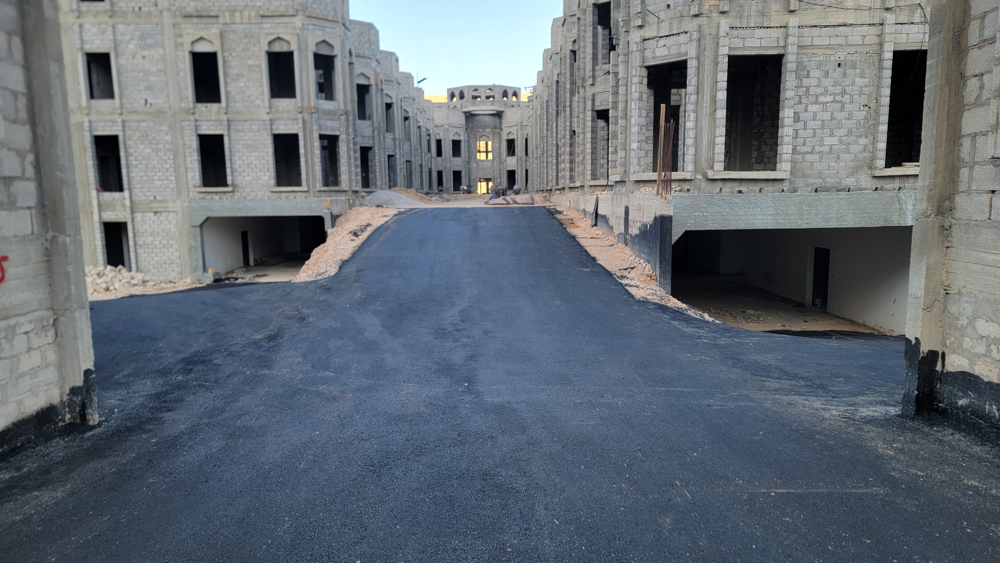
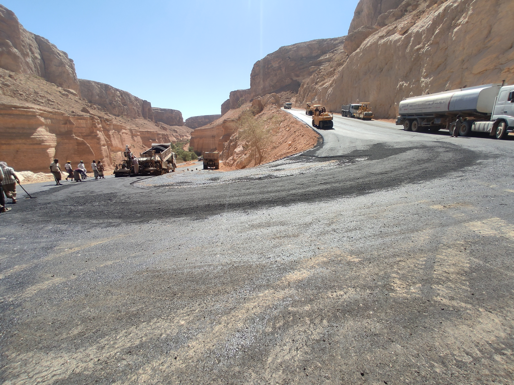

مهندس مدني يمني بخبرة تزيد عن 8 سنوات في التنفيذ الميداني لمشاريع الطرق والبنية التحتية. متخصص في الرفع المساحي الدقيق، وحساب الكميات، والإشراف الفني. أدمج بين صرامة الميدان وصناعة المحتوى لسد الفجوة بين التعليم الأكاديمي والواقع العملي، وكسر حاجز الخوف لدى المهندسين.
الإشراف الفني والميداني الشامل على مشروع سفلتة طريق عقبة الحبيب شهاب الدين - المرحلة الأولى بمديرية تريم.
استشاري مساحة في مشروع تأهيل الشوارع الحضرية بمديرية سيئون.
إدارة وتنفيذ مشروع بناء عمارة سكنية.
سفلتة طريق عقبة رحاب – الفرضحة بطول 33كم في تضاريس جبلية وعرة.
سفلتة طريق عقبة كتبة – السلاسل - حوارم المرحلة الأولى بطول 14كم.
الصيانة الطارئة لطريق عصم – ثمود – رماه بطول 260كم.
مشروع الصرف الصحي الاسعافي لمسجد البقيع.
مشروع الصرف الصحي الاسعافي بمدينة تريم بطول 4كم.
وتدريب المكاتب على أجهزة Total Station.



